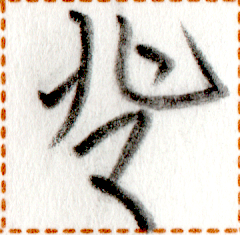
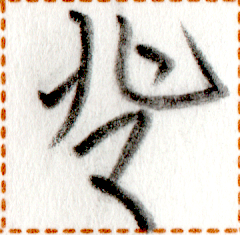
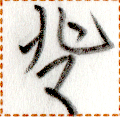

← Previous
Index
Next →
English:
They're taking an exam.
Chinese:
他们在考试。
Chinese (pinyin):
Tāmen zài kǎoshì.
Pekzep (latin transcription): zap2 ge aim2 guk2 xy1 nui2.
Pekzep (hanzi transcription):
彼等在受裁学。
Pekzep (linzklā):

Sound
Recording by falira.lyjotafis / 这是falira.lyjotafis的录音。
:
Your browser does not support the audio element.
Analysis:
zap2 ge
彼等
noun
they
aim2
在
verb-modifier
aspect marker
be ~ing
guk2 // xy1 nui2
受 // 裁学
//
verb-object compound
to take an exam


 
